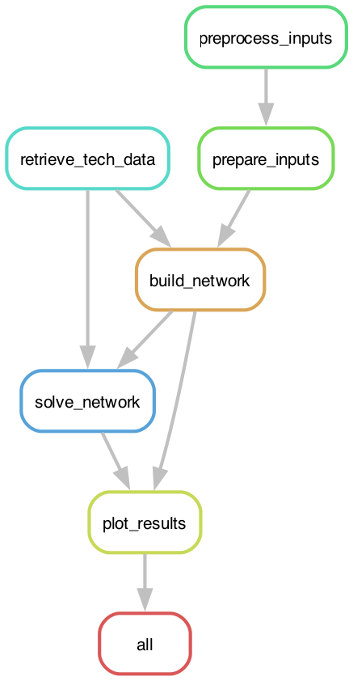

Workflow and Rules#
GreenBubble is orchestrated by Snakemake.
Each processing step is a rule defined in the rules/ folder.
The Snakefile assembles the full directed acyclic graph (DAG) and
manages file dependencies, caching, and parallelism.
For instructions on running the workflow and configuring scenarios, see Running the Model with Snakemake.
—
Rule graph#
{kind=link}

The six rules execute in the following order:
preprocess_inputs ──┐
├──▶ prepare_inputs ──┐
retrieve_tech_data ─┘ ├──▶ build_network ──▶ solve_network ──▶ plot_results
└──────────────────────┘
In stochastic mode, preprocess_inputs runs once per scenario year
(in parallel when -j > 1) before prepare_inputs assembles the
combined inputs.
—
Rules reference#
retrieve_tech_data (rules/retrieve.smk)#
Downloads the technology-cost CSV from the technology-data repository. The file is cached locally; a SHA check at workflow start triggers re-download automatically if the remote file has changed.
Output:
data/technology-data/outputs/costs_{year_investment}.csvScript:
scripts/snakemake_retrieve_tech.py
—
preprocess_inputs (rules/retrieve.smk)#
Downloads and preprocesses energy-market input data for a given year: electricity spot prices, CO₂ emission intensities, natural gas prices, renewable capacity factors (wind and solar), and district heating demand.
Parameterised by the {year} wildcard; runs once per scenario year
(main year + all stochastic scenario years). In stochastic mode, multiple
instances run in parallel.
Output:
data/Inputs_{year}/.preprocessedScript:
scripts/snakemake_preprocess.pyForce refresh:
snakemake -j1 --forcerun preprocess_inputs
—
prepare_inputs (rules/build.smk)#
Loads all preprocessed CSV files and assembles the inputs_dict used
by the network builder: demand time series, efficiency curves, tariff
schedules, and RFNBO constraint vectors.
Re-runs automatically when config/config.default.yaml (or the user
override config/config.yaml) changes.
Input: preprocessed year markers, config file(s)
Output:
resources/inputs_{year}.pklScript:
scripts/snakemake_prepare_inputs.py
—
build_network (rules/build.smk)#
Constructs the full PyPSA network from the cost database and the assembled
inputs dictionary. Applies all technology flags from n_flags (inactive
technologies are excluded entirely). Adds stochastic scenario sub-networks
if stochastic.stochastic: true.
Optionally saves an SVG diagram of the pre-optimisation network
(n_flags.print: true) and exports the PRE network to .nc
(n_flags.export: true).
Input: cost CSV, inputs pickle
Output:
resources/{network}/{network}_PRE.nc,resources/{network}/{network}_comp_alloc.pklScript:
scripts/snakemake_build_network.py
—
solve_network (rules/solve.smk)#
Runs the capacity expansion and dispatch optimisation via Linopy.
The solver (HiGHS or Gurobi) and its parameter profile are set in
config/config.default.yaml under optimization.
Post-solve cleanup: components with optimal capacity below
optimization.zero_threshold_MW are treated as not built and
their time series are zeroed.
Input: PRE network, cost CSV
Output:
{outdir}/{network}/networks/{network}_OPT.ncScript:
scripts/snakemake_solve.py
—
plot_results (rules/plot.smk)#
Exports all post-processing outputs: dispatch plots, capacity bar charts, Levelised Cost of Production (LCOP) tables, shadow price tables, and CSV result files.
Input: OPT network, component allocation pickle
Output:
{outdir}/{network}/plots/Script:
scripts/snakemake_plot.py
—
Output structure#
outputs/single_analysis/{network_name}/
networks/
{network}_PRE.nc ← pre-optimisation network
{network}_OPT.nc ← post-optimisation network (dispatch + p_nom_opt)
plots/
capacity/ ← capacity bar charts per technology
dispatch/ ← hourly dispatch time series
economics/ ← LCOP, cost breakdown, shadow prices
*.csv ← tabular results for further analysis
The {network_name} encodes all key scenario parameters (flags, CO₂ cost,
targets, year, run name) — see Wildcards for the full format.
—
Adding rules#
New processing steps follow the same pattern:
Add a rule to an existing
rules/*.smkfile (or create a new one)includethe file in theSnakefileAdd the rule’s output to the appropriate downstream rule’s
input:
See Guide for Adding New Technologies for a worked example of extending the build and solve pipeline.